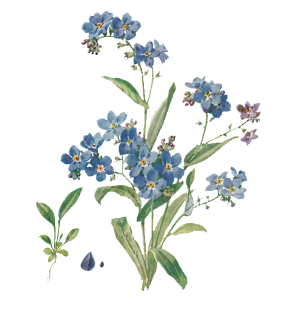
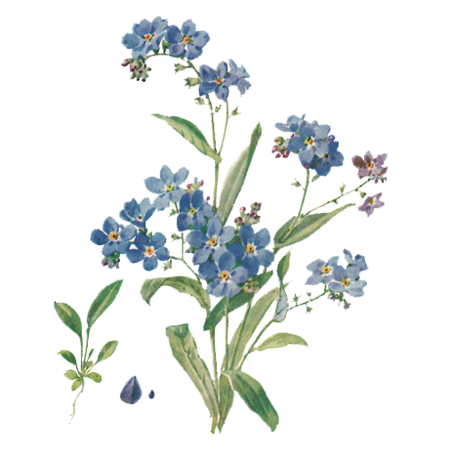

Rose oil is an important ingredient in the perfume industry. Extraction of minimal amount of this oil requires huge amount of roses (one gram of oil
is produced from two thousand roses). The nice scent of the rose comes from microscopic perfume glands on the petals.
Paragraph №2
Flowers provide an eye-catching attribute to an otherwise plain, green-leaved plant. When insects, birds and some bats dip down to take a look at the
flower and steal its nectar, they are inadvertently pollinating the plants by moving pollen from the male stamens to the female pistils. Flower is what (following
pollination) produces the fruit. It is also where the seed is produced so that more of the same plant will grow in the future.

 
